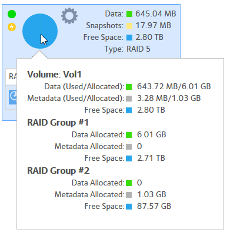

You can add SSD drives to an existing volume as a tier. ReadyNAS OS automatically uses
a tier for volume metadata. With some workloads, this can improve filesystem
performance.
Depending on the RAID setting of the volume there is a minimum
number of disks required to add a tier. The metadata tier disks need not be the same size as
the data disks. You can estimate the size needed by hovering over the icon of the volume and
checking the volume metadata allocation.
